Ristorante La Signora
Matteo Tiziano
Curci
Inhaber · Ristorante La Signora
Telefon0721 707160
E-Mailkacc1105@gmail.com
Ristorante La Signora · Karlsruhe

Ristorante La Signora
Inhaber · Ristorante La Signora
Ristorante La Signora · Karlsruhe